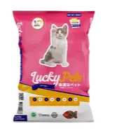
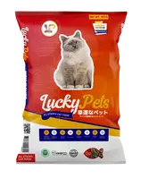

Discover Our Purrfect Products for Your Furry Friends!
Pet-tastic Picks

Kitten Cat Food
Formulated to meet the nutritional needs of growing kittens, 100% natural ingredients with no artificial colors, flavors, or preservatives

All Stages Cat Food
Formulated to meet the nutritional needs of growing kittens, 100% natural ingredients with no artificial colors, flavors, or preservatives